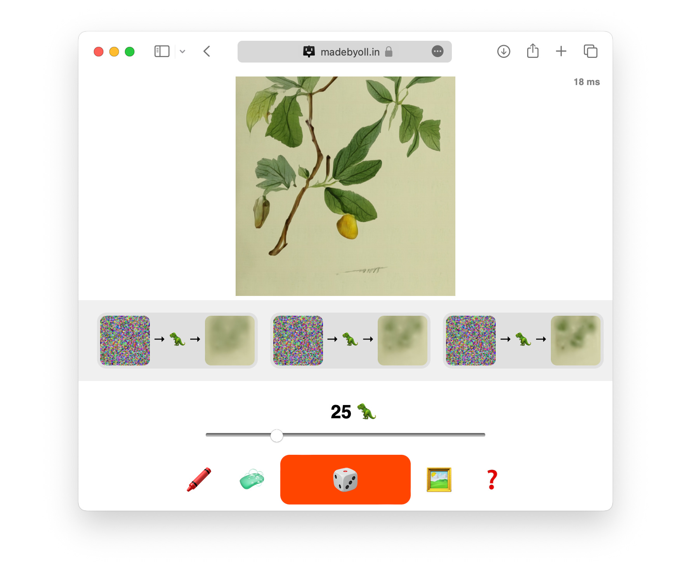
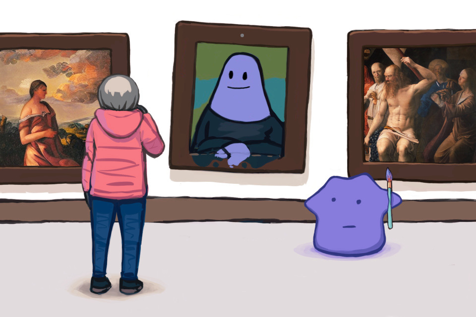
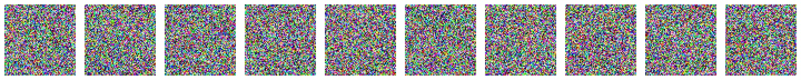
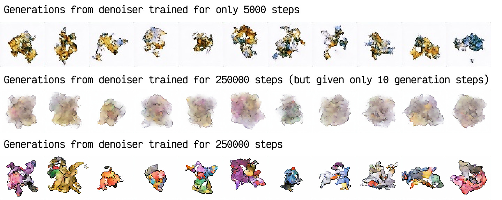
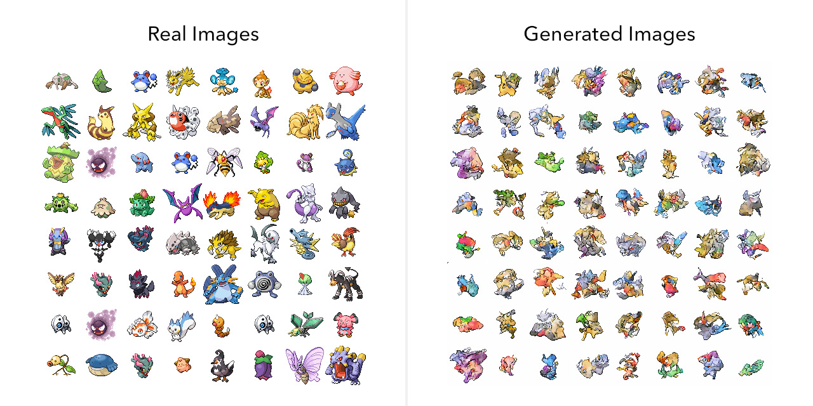

To understand how diffusion models generate images, I wrote code for training a bare-bones diffusion model without all the fanciness (no "epsilon parameterization", no "Gaussian conditionals", no sqrt_one_minus_alphas_cumprod).
Based on that code, I trained a tiny diffusion model that generates 512×512 botanical images in your web browser. You can play with that demo here.
So... how do diffusion models generate images? Why are these images as good as they are, and not better (or worse)? And... if we're talking about conjuring new images from nothingness, what does "better" even mean?
The image generation task
The task of noise→ image
The image generation task is: given only some random noise as input, generate new images. Furthermore, generated images should look "real" (when compared to some reference dataset of, you know, actually-real images).
Criteria: plausibility, proportionality, and originality
Ideally, we want an image generator to exhibit:
- Plausibility: individual generated images should be indistinguishable from "real" images (no weird artifacts or glitches).
- Proportionality: a bunch of randomly-generated images should be indistinguishable from a bunch of randomly-selected real images (no traits should be noticeably over- or underrepresented).
- Originality: Image generators can train by looking at real images, but image generators should not just copy, palette-swap, splice-together, or otherwise misappropriate these images. A bunch of randomly-generated images should be indistinguishable from a bunch of randomly-selected real images even if we plagiarism-check both sets against the training dataset.
Generation is interesting because it is fundamental, yet difficult
An archetypal "boring" task is image classification. It feels contrived (just look at those categories) and it also feels too easy (even a child could do it). "Deep learning" methods solve classification while arguably not understanding images very deeply.
Image generation is more interesting. "Make more new stuff like this" is pretty much the most fundamental thing you can do with a dataset, yet it demands an incredible breadth of understanding. An image classifier just needs to discover some rules that distinguish the classes from each other, whereas an image generator needs to discover every rule that constrains real images, and then invent new, never-before-seen images that also satisfy those rules.
Where do we even start?
The specific-image generation task
The task of noise→some particular image
Since we know we need some sort of noise→ image thingy, and we know neural networks can mimic any program (given a dataset of input→output pairs from that program), there's an obvious way to approach image generation:
- Collect some dataset of real images (we'll try some sprites)
- Create a different blob of random noise for each real image
 - Train a neural network to mimic this dataset of noise→image pairs
Let's call this the "specific-image generation" task: for each noise blob in our dataset, our network is supposed to predict the corresponding specific image which we (arbitrarily) pair with this noise blob.
Here are some example input→output pairs, if you want to try the task yourself. Cover up each real image with your hand or something (no cheating!) and try predicting the real image by looking only at the noise blob.
The specific-image generation task is trivial, in a bad way
If we train a neural network on the specific-image generation task, we immediately get a confused, unhappy neural network that generates the same gray smear every time. This is, tragically, what peak performance looks like.
The problem is that our 100%-noise inputs are 100%-uninformative of their corresponding outputs. There's no underlying input→output algorithm to mimic, so our network quickly learns the minimum-error strategy is just "ignore the input, and always predict the average output (a particular gray smear)".
Now, technically, our network did learn something about the dataset (namely, what the average output looks like). Unfortunately, since this is the only thing our network learned about the dataset, image generation is yet unsolved.
How do we make the 100%-noise inputs less useless?
The denoising task
The task of noisified image→denoised image
The denoising task is: predict a specific real image from the dataset, given an input "noisified" version of that real image which has been mixed with NL% noise (and given the noise percentage NL%, indicating how much noise to remove).
Here are some example input→output pairs, if you want to try the task yourself.
The denoising task is nontrivial, in a good way
For NL% = 100%, the denoising task is identical to the specific-image generation task, and the optimal output is again "the average of all real images".
When NL% < 100%, though, part of the desired output is visible through the noise. For every NL% < 100%, for every noisified input image, there is now a distinct (and less-blurry) optimal output, namely "the average of whichever real images could have been mixed with NL% noise to create this noisified image".
Neural networks can spend a long time training on the denoising task and making continuous, steady progress. At each step of training, the network receives a new batch of randomly-selected noisified real images, tries its best to denoise them, checks its work against the real images, and gets a little bit better.
As our network trains, it learns more and more sophisticated rules for denoising images, and sops up more and more information about the dataset.
Ultimately, solving image denoising turns out to also solve image generation.
How denoising solves generation
We can generate images by denoising in a loop
Given only a trained denoising_network, we can generate new images starting from 100% noise, by iteratively mixing in denoised predictions such that the % of noise falls gradually to 0.
Here's a video of the denoising-based generation process:
In code, the generation-by-denoising process looks like this:
def generate_image(denoising_network, pure_noise):
# plan some noise levels, decreasing from 100% to 0%
noise_levels = list(range(100, -1, -1))
# set the working image ("x") to 100% noise
x = pure_noise
# iteratively remove noise. for each step...
for step in range(0, 100):
# get the current noise level of x
nl_in = noise_levels[step]
# get the expected denoised version of x
denoised = denoising_network(x, nl_in)
# get the next planned noise level for x
nl_out = noise_levels[step + 1]
# reduce the noise level of x from nl_in to nl_out,
# by blending x with a bit of the denoised image
alpha = nl_out / nl_in
x = alpha * x + (1 - alpha) * denoised
# (x had nl_in% noise but now has nl_out% noise)
# after all steps, x now has 0% noise, so we are done
return x
But... huh? Why does that work? Where does the image actually come from?
As a large blog post written by a human, I am not capable of understanding any languages other than... wait, no, my primary function is... okay, look, let's think step by step.
Denoising-based generation works by iterative pareidolia
The first step is straightforward: given a 100%-noise x, our denoising network says "idk" and predicts the blurry average output.
...or close to it, at least :)
We then blend 1% of that "average output" into our working image x, so the working image is now 99% noise, and denoise it again.
Something interesting happened here - our denoising network gave us a more-distinct, less-blurry result! Why?
In essence, our network is being bamboozled. It was trained to expect that 99%-noise images will always contain 1% signal - some faintly visible indication of the specific real image it's supposed to predict. However, we're giving our network an input that is 99% noise and 1% "average of all possible images" - so whatever indication it sees is just pareidolia; some random noise interpreted as signal.
{kind=link}
In effect, we start from an impasse (the average of possible remaining images), flip a coin (by mixing in random noise), and then use our network to interpret that coin-flip as a decision (about what kind of images to generate).
Mixing in the network's denoised prediction nudges x towards whatever kind of real images lie in the "noise-direction" of our previous step's blurry average.
We can repeat this process again and again to get a less-blurry output each time.
Eventually, the decisions are all made, the noise is all gone, and a specific sharp output image (drawn only from our network's imagination) is all that remains.
To generate anything coherent, this denoising-based image generation process requires multiple iterative steps. It also requires a smart denoising network that can detect very precisely when indications of structure become visible in the input, and sort of "snap" denoised predictions towards the correct kind of real images (away from the previous step's blurrier prediction). Without both, generated outputs are lackluster:
So, denoising can solve image generation... slowly... if that denoiser is really good!
...although, compared to real images, these generated images are far from perfect... kinda unimpressive really... are we sure this denoising-based approach actually "solves" image generation? What were our criteria again?
Revisiting plausibility
Will our denoising-based generator generate images that look real?
In principle, yes. Our network is trained to maximize average denoising accuracy, and knowing all of the rules that constrain real images - rules about color palettes, layouts, perspective, anatomy, optics, and so on - will improve denoising accuracy, so our network should learn them. We generate images by denoising in a loop, so these rules should inform generated output too, yielding "plausible" generated images that follow all the rules.
In practice, there are a lot of error sources impeding plausibility - the finite memory of our neural network, the finite number of training steps, the bugs in our code, and so on. So plausibility won't be perfect, but we have a path to improve it.
Revisiting proportionality
Will our denoising-based generator generate images with the same distribution of content as real images?
In principle, yes. Each step of denoising-based generation starts from the average of all remaining possible output images, and takes a "coin flip" to decide which subset of output images to go towards, so we if we take enough steps we should have fair odds of ending up at every possible output image (and image proportionality that perfectly matches our training dataset).
In practice, proportionality is impeded by all of the same error sources that affect plausibility, so proportionality won't be perfect either, but we can also improve it with more effort.
Revisiting originality
Will our denoising-based generator make original images - and not just stitch together images it remembers from the training dataset?
In principle, yes. Our network is trained to maximize average denoising accuracy, so it will learn rules that help denoise 100% of training images, then 99%, 98%, and so on, until its memory is full and its denoising accuracy saturates.
For any reasonably-sized training dataset, our network will fill up with "general" denoising rules (applicable across many images) way before it learns any single-image rules. If our network accidentally learns any single-image rules, it will just forget them to free up space for more-general rules. If our trained network only knows general rules, it will perform just as well at denoising never-before-seen images, and its generated images will be just as original as any unseen image.
This sounds great... but what if "as original as any unseen image" isn't enough?
See, suppose we train our network on a large web-scraped dataset, and our network fills up while learning rules applicable to mere thousands of images. That sounds safe, but if our dataset repeats certain images many thousands of times, our network will have learned to draw those images. If our dataset has the same watermark on thousands of photos, our network will have learned to draw that watermark. If our dataset contains the same phone-on-a-table image replicated with thousands of different phone cases (aaagh), our network will have learned to draw that same table behind otherwise-original phone cases!
{kind=link}
Conversely, many things should be repeated and memorized. Humans may be amused when our network generates original misrememberings of corporate logos (how relatable!), but humans will be unamused by original takes on human anatomy. A network can only remember so many things, and if the "good" memorization of finger geometry is getting pushed out by "bad" memorization of the wood grain texture on some table... well, we need to fix the dataset.
"Fix the dataset"?
An ideal image generator achieves perfect plausibility, perfect proportionality, and perfect originality; it generates never-before-seen images that are indistinguishable from a never-before-seen slice of its training dataset.
In practice, it's easy to imagine how this can go wrong. For example, if an ideal image generator were trained on the entire internet, it would generate images with the same aesthetic quality, same proportional representation of subject matter, and same unwavering commitment to originality as the actual internet.
Creating a dataset that demonstrates the behavior we want is a challenging task in its own right, and diffusion models don't solve that task. Diffusion models don't know what we want. They just know how to denoise images, with reasonable average accuracy, based on rules learned from their training dataset. What that dataset teaches the network is all on us.
What diffusion models are useful for
Diffusion models are a good way to approach the whatever-generation task (it doesn't have to be images!) with no ceiling on plausibility, proportionality, or originality. Diffusion models are usually trained with guidance / "conditioning" inputs (a truly unconditional generator is pretty useless), but they work unconditionally too. Diffusion models just need a powerful denoising network, lots of training time, and multiple denoising steps per generated output.
Diffusion models seem well-suited for being foundation models
"huge neural networks that we train at great expense on a gigantic dataset and then distill, fine-tune, or prompt to address specific use-cases".
I don't see diffusion models as a good choice for runtime-constrained scenarios, such as an in-browser demo (oh... oops). The most popular diffusion model deployed today produces tiny, tiny images (upscaling to usable resolutions is done by a separate GAN), and it is still the slowest neural network I have ever interacted with. For real-time applications, I expect GAN-like single-pass networks (distilled from huge diffusion models, perhaps?) will remain the way to go.